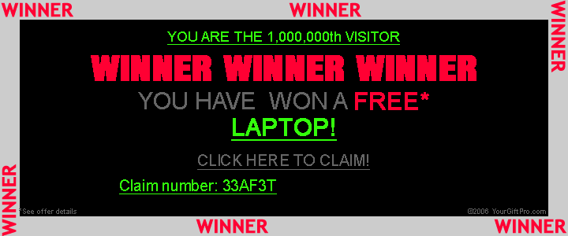

Angaben gem. § 5 TMG:
Lukas F.
Primatenstr. 29
90477 Nürnberg
Telefon: 0912479022
E-Mail: lukas.f@monkeydrip.de
Umsatzsteuer-ID
Umsatzsteuer-Identifikationsnummer gem. § 27 a Umsatzsteuergesetz:
DE XXX XXX XXX
Haftungsausschluss – Disclaimer:
Haftung für Inhalte
Alle Inhalte unseres Internetauftritts wurden mit größter Sorgfalt und nach bestem Gewissen erstellt. Für die Richtigkeit, Vollständigkeit und Aktualität der Inhalte können wir jedoch keine Gewähr übernehmen. Als Diensteanbieter sind wir gemäß § 7 Abs.1 TMG für eigene Inhalte auf diesen Seiten nach den allgemeinen Gesetzen verantwortlich. Nach §§ 8 bis 10 TMG sind wir als Diensteanbieter jedoch nicht verpflichtet, übermittelte oder gespeicherte fremde Informationen zu überwachen oder nach Umständen zu forschen, die auf eine rechtswidrige Tätigkeit hinweisen. Verpflichtungen zur Entfernung oder Sperrung der Nutzung von Informationen nach den allgemeinen Gesetzen bleiben hiervon unberührt.
Eine diesbezügliche Haftung ist jedoch erst ab dem Zeitpunkt der Kenntniserlangung einer konkreten Rechtsverletzung möglich. Bei Bekanntwerden von den o.g. Rechtsverletzungen werden wir diese Inhalte unverzüglich entfernen.
Haftungsbeschränkung für externe Links
Unsere Webseite enthält Links auf externe Webseiten Dritter. Auf die Inhalte dieser direkt oder indirekt verlinkten Webseiten haben wir keinen Einfluss. Daher können wir für die „externen Links“ auch keine Gewähr auf Richtigkeit der Inhalte übernehmen. Für die Inhalte der externen Links sind die jeweilige Anbieter oder Betreiber (Urheber) der Seiten verantwortlich.
Die externen Links wurden zum Zeitpunkt der Linksetzung auf eventuelle Rechtsverstöße überprüft und waren im Zeitpunkt der Linksetzung frei von rechtswidrigen Inhalten. Eine ständige inhaltliche Überprüfung der externen Links ist ohne konkrete Anhaltspunkte einer Rechtsverletzung nicht möglich. Bei direkten oder indirekten Verlinkungen auf die Webseiten Dritter, die außerhalb unseres Verantwortungsbereichs liegen, würde eine Haftungsverpflichtung ausschließlich in dem Fall nur bestehen, wenn wir von den Inhalten Kenntnis erlangen und es uns technisch möglich und zumutbar wäre, die Nutzung im Falle rechtswidriger Inhalte zu verhindern.
Diese Haftungsausschlusserklärung gilt auch innerhalb des eigenen Internetauftrittes „Name Ihrer Domain“ gesetzten Links und Verweise von Fragestellern, Blogeinträgern, Gästen des Diskussionsforums. Für illegale, fehlerhafte oder unvollständige Inhalte und insbesondere für Schäden, die aus der Nutzung oder Nichtnutzung solcherart dargestellten Informationen entstehen, haftet allein der Diensteanbieter der Seite, auf welche verwiesen wurde, nicht derjenige, der über Links auf die jeweilige Veröffentlichung lediglich verweist.
Werden uns Rechtsverletzungen bekannt, werden die externen Links durch uns unverzüglich entfernt.
Urheberrecht
Die auf unserer Webseite veröffentlichen Inhalte und Werke unterliegen dem deutschen Urheberrecht (http://www.gesetze-im-internet.de/bundesrecht/urhg/gesamt.pdf) . Die Vervielfältigung, Bearbeitung, Verbreitung und jede Art der Verwertung des geistigen Eigentums in ideeller und materieller Sicht des Urhebers außerhalb der Grenzen des Urheberrechtes bedürfen der vorherigen schriftlichen Zustimmung des jeweiligen Urhebers i.S.d. Urhebergesetzes (http://www.gesetze-im-internet.de/bundesrecht/urhg/gesamt.pdf ). Downloads und Kopien dieser Seite sind nur für den privaten und nicht kommerziellen Gebrauch erlaubt. Sind die Inhalte auf unserer Webseite nicht von uns erstellt wurden, sind die Urheberrechte Dritter zu beachten. Die Inhalte Dritter werden als solche kenntlich gemacht. Sollten Sie trotzdem auf eine Urheberrechtsverletzung aufmerksam werden, bitten wir um einen entsprechenden Hinweis. Bei Bekanntwerden von Rechtsverletzungen werden wir derartige Inhalte unverzüglich entfernen.
Dieses Impressum wurde freundlicherweise von jurarat.de zur Verfügung gestellt.